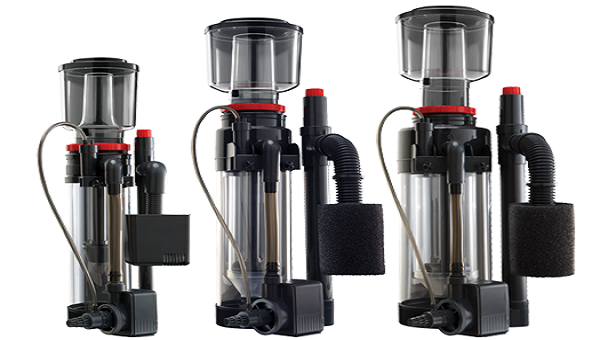
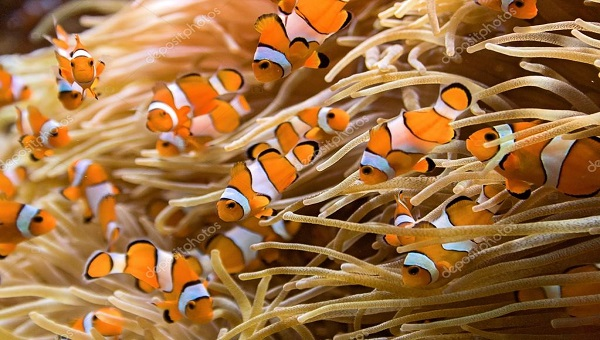

1 Enero 2019
por Fco. Rodríguez
¿Qué es un acuario marino?
Aunque la gran mayoría de acuarios que podemos ver en nuestros hogares son los de agua dulce, existen también de agua salobre y acuarios marinos. Hoy os voy a hablar
sobre los conceptos básicos más importantes de los acuarios marinos.
12 Enero 2019
por Fco. Rodríguez
¿Qué necesito para empezar un acuario marino?
Esta es una de las primeras preguntas que nos surgen cuando pensamos en iniciarnos en el mundo de los acuarios. Lo cierto es que la respuesta más acertada es siempre: depende.
28 Enero 2019
por Fco. Rodríguez
¿Qué es un skimmer y para que sirve?
El skimmer es una herramienta que nos sirve para separar la urea o proteína del agua salada. Existen una gran infinidad de marcas, modelos, tamaños, caudales, formas y de su ubicación: externos o internos.

4 febrero 2019
por Fco. Rodríguez
¿Sump o no Sump?
El sumidero o sump, es altamente recomendable en acuarios marinos porque nos permite mantener toda la "maquinaria" de nuestro acuario, de forma ordenada (agua de reposición, skimmer, algas beneficiosas, roca, etc...)
y con grandes beneficios.
20 febrero 2019
por Fco. Rodríguez
Guía definitiva de peces para principiantes
En esta guía aprenderás que peces son los más recomendados para comenzar, y cuales no debes elegir. También tendremos en cuenta el tamaño de nuestra urna porque los peces de agua salada requieren de
muchísimo más espacio que sus parientes de agua dulce.
